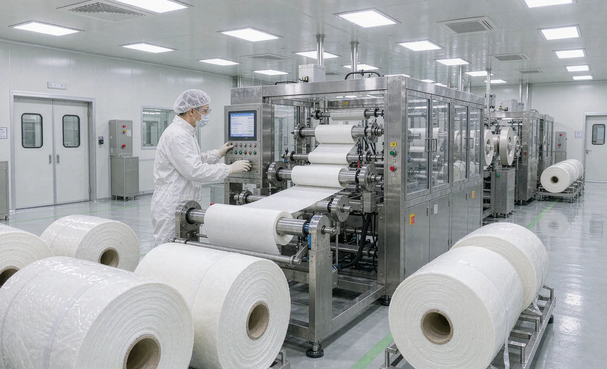
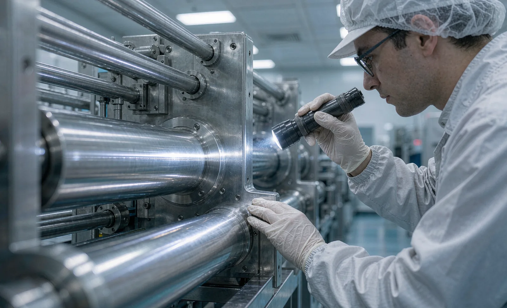

Published September 29, 2026 | By HDPTH Technical Editorial Team

Slitting nonwoven for hygiene products is demanding; slitting it for medical dressings, surgical packs and sterile barrier packaging is demanding in a different way. The machine still has to cut clean edges and wind even rolls, but now every surface near the web, every fiber it sheds and every crevice it hides becomes part of the buyer's contamination-control problem. Our article on the roll winding machine for medical materials covers the material and roll-quality side; this guide covers the machine itself—how hygienic design differs from standard converting equipment and what a buyer should specify and verify.
What the cleanroom class asks of the machine
Cleanroom classes under ISO 14644-1 define allowable particle concentrations. Medical consumables converting commonly sits in ISO 8 to ISO 7; more sensitive applications go lower. The class itself does not certify a machine—but it defines the environment the machine must live in, and that drives equipment requirements: low particle emission in operation, surfaces that tolerate the facility's disinfectants, lubricants chosen for the product zone, and maintenance procedures compatible with gowning rules. Ask suppliers which classes they have delivered into and how they measured performance there; a credible answer comes with references and test methods, not adjectives.
Surfaces and materials in the product zone
The product zone is everything the web touches or passes near: rollers, knife holders, guards, tables, chutes. Hygienic design choices here include stainless or hard-anodized surfaces with smooth finishes instead of painted panels that can chip and shed; crevice-free welds and radiused corners instead of bolted overlays that trap fibers; transparent guards without open edges facing the web; and a documented materials list so your quality team knows exactly what is near the product. Avoiding painted surfaces inside the product zone is one of the cheapest hygiene upgrades available—and one of the most visible signs a supplier understands the environment.
Particle and fiber management
Slitting generates dust; hygienic design accepts that and engineers for it. The effective pattern is the same as in the dedicated dust extraction system guide: capture at the source with extraction at the knife heads and the rewind zone, sealed ducting routed out of the room, and surfaces shaped so fibers have nowhere to settle. Combine this with a web cleaning system if the incoming material carries particles, and remember that extraction draws air: the machine's flow requirements must be coordinated with the room's air-handling design, or the room will fight the machine. Static control matters here too, since charged fibers migrate to every grounded surface and end up exactly where you do not want them.
Design details that decide cleanability
- Bearing placement: keep lubricated bearings outside the product zone or use sealed, food/medical-compatible lubricants.
- Cable routing: sealed, sloped, accessible runs—not open trays above the web collecting fallout.
- Openability: guards and covers that open without tools where operators wipe daily; documented fasteners where they must not.
- Drainage of debris: chutes and trays that lead trim and fibers to controlled collection points, not to the floor.
- Cleanable labels and markings: laser-etched or engraved plate data instead of adhesive labels that peel into the environment.
- Lubrication strategy: centralized or extended-interval lubrication so routine maintenance does not open the clean zone daily.
Specifying a machine for a classified environment?
Send HDPTH your cleanroom class, product application and cleaning protocol. We will propose a hygienic machine configuration with the supporting documentation.
Discuss Your ApplicationCleaning and disinfection compatibility
The machine will be cleaned with whatever your protocol uses—isopropyl alcohol, quaternary ammonium compounds, hydrogen peroxide or agents specified in your GMP procedures. Every exposed material must tolerate that chemistry, at the concentrations and contact times you use, for the life of the machine. This is a written question with a written answer: ask the supplier for a cleaning-compatibility statement covering the product-zone materials, and fold it into your cleaning validation file. The documentation habit matters beyond compliance—the IQ/OQ validation documentation approach gives the structure for recording what was verified and when.
Documentation a regulated buyer should request
| Document | Why It Matters |
|---|---|
| Materials list for the product zone | Basis for contact-material assessment and cleaning compatibility |
| Material certificates | Traceable composition of stainless and polymer surfaces near the web |
| Cleaning-compatibility statement | Confirms surfaces tolerate your disinfectants |
| Lubricant specification | Product-zone lubricants must match your contamination policy |
| Particle emission data or cleanroom references | Evidence the machine performs in classified environments |
| IQ/OQ documentation package | Lets the machine enter your validation system without rework |
Notice what is on this list: mostly papers, not hardware. For a medical buyer, the documentation package is part of the machine, and its absence at delivery delays production as surely as a missing bearing.
Design at the start beats hygiene retrofits
Some hygiene features can be added later—extraction units, sealed cable runs, surface changes. Others are frozen in the frame: bearing positions, crevice geometry, weld quality, the openness of the product zone. A structured comparison of upgrading a current machine against buying a purpose-designed one, as outlined in the retrofit vs new guide, usually ends with the same conclusion for regulated production: specify hygienic design at the order stage, where it costs a fraction of what retrofitting costs and performs better from day one.
Buyer FAQ
What does hygienic design mean on a slitter rewinder?
Hygienic design means the machine can be cleaned and kept clean: smooth, non-shedding surfaces in the product zone, crevice-free construction, sealed or routed-away cable runs, bearings kept outside the web path, accessible corners, and materials compatible with the disinfectants used in the facility. The goal is that the machine adds no particles or contamination to the web and can be verified clean after cleaning.
Which cleanroom class matters for nonwoven converting equipment?
It depends on the end product. Medical packaging and consumable materials commonly sit in ISO 8 to ISO 7 environments, while more sensitive applications push toward ISO 7 or better. The class defines allowable particle counts and drives requirements such as low particle emission from the machine, compatible lubricants, wipe-down surfaces and sometimes gowning constraints for maintenance access. Ask the supplier for experience at your class, not a generic cleanroom claim.
How is dust from slitting nonwoven managed in a clean environment?
Dust is managed at the source and along the path: local extraction at the knife heads and rewind zone, sealed ducting routed out of the room or to a dedicated filtration unit, enclosed or skirted unwind and rewind areas, and surfaces shaped so fibers cannot settle and accumulate. The web cleaning and dust extraction system should be specified together with the room's air-handling capacity, since both draw from the same air balance.
What documentation should a medical materials buyer request from the machine supplier?
Request material certificates for contact and near-contact surfaces, a surfaces-and-materials list in the product zone, the cleaning and disinfection compatibility statement, lubricant specifications for the product zone, particle emission data or cleanroom test reports where available, and the validation support package such as IQ/OQ documentation. This set lets your quality team fold the machine into your environmental monitoring and cleaning validation program.
Can a standard slitter rewinder be upgraded for cleanroom use?
Partly. Surface upgrades, extraction, sealing and cable routing can retrofit many machines, but structural features such as frame geometry, bearing placement and crevice-free welds are fixed at design stage. For regulated production the cost and risk of partial upgrades should be compared with a machine designed for the class from the start, using a structured retrofit assessment.
Sources
- ISO 14644-1: Cleanrooms and associated controlled environments
- HDPTH: Roll winding machine for medical materials
- HDPTH: Dust extraction system
- HDPTH: IQ/OQ validation documentation guide
- HDPTH: Web cleaning system buyer guide

Build hygiene into the machine, not the schedule
Request HDPTH's hygienic design options and documentation package for your medical or cleanroom application.
Request a Configuration